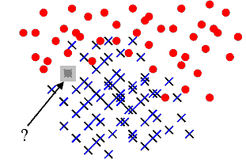

Classification à l’aide des plus proches voisins#
La figure suivante représente un problème de classification classique. On dispose d’un nuage de points réparti en deux classes. Un nouveau point semblable aux précédents se présente, sa classe est inconnue. L’objectif est de lui attribuer une classe en utilisant le fait qu’on connaît la classe d’appartenance des autres points.
A partir d’un nuage de points pour lesquels la classe d’appartenance est connue, comment classer un nouveau point pour lequel cette classe est inconnue ? Une méthode simple consiste à attribuer à ce nouveau point la même classe que le plus proche des points appartenant au nuage initial. C’est la méthode des plus proches voisins (ou nearest neighbours) Elle est facile à implémenter mais peu utilisée car souvent très gourmande en temps de calcul lorsque le nuage de points est conséquent. Le premier paragraphe décrit cette méthode, les suivants cherchent à accélérer l’algorithme selon que le nuage de points appartient à un espace vectoriel ou non. La dernière partie présente l’algorithme LAESA pour le cas où le nuage de points appartient à un espace métrique quelconque.
Principe#
Cette méthode est la plus simple puisqu’elle consiste à associer à \(x\), l’élément à classer, le label \(c\pa{x_{i^*}}\) de l’élément le plus proche \(x_{i^*}\) dans l’ensemble \(\vecteur{x_1}{x_N}\). Ceci mène à l’algorithme de classification suivant :
Algorithme A1 : 1-PPV ou plus proche voisin
Soit \(X = \vecteur{x_1}{x_N} \subset E\) un ensemble d’éléments d’un espace métrique quelconque, soit \(\vecteur{c\pa{x_1}}{c\pa{x_N}}\) les classes associées à chacun des éléments de \(X\). On note \(d\) la distance définie sur l’espace métrique \(E\). Soit \(x\) un élément à classer, on cherche à déterminer la classe \(\hat{c}(x)\) associée à \(x\). On définit \(x_{i^*}\) comme étant :
Alors \(\hat{c}(x) = c\pa{x_i^*}\).
Cet algorithme est souvent appelé 1-PPV (ou 1-NN pour Nearest Neighbors). Il existe une version améliorée k-PPV qui consiste à attribuer à \(x\) la classe la plus représentée parmi ses \(k\) plus proches voisins.
Algorithme A2 : k-PPV ou k-plus proches voisins
Soit \(X = \vecteur{x_1}{x_N} \subset E\) un ensemble d’éléments d’un espace métrique quelconque, soit \(\vecteur{c\pa{x_1}}{c\pa{x_N}}\) les classes associées à chacun des éléments de \(X\). On note \(d\) la distance définie sur l’espace métrique \(E\). \(\omega\pa{x,y}\) est une fonction strictement positive mesurant la ressemblance entre \(x\) et \(y\). Soit \(x\) un élément à classer, on cherche à déterminer la classe \(c(x)\) associée à \(x\). On définit l’ensemble \(S^*_k\) incluant les \(k\)-plus proches voisins de \(x\), cet ensemble vérifie :
On calcule les occurrences \(f(i)\) de chaque classe \(i\) dans l’ensemble \(S^*_k\) :
On assigne alors à \(x\) la classe \(c(x)\) choisie dans l’ensemble :
Dans sa version la plus simple, la fonction \(\omega\pa{x,y}\) utilisée lors du calcul de la contribution \(f\) (1) est constante. Mais il est possible de lui affecter une valeur tenant compte de la proximité entre \(x\) et \(y\). La table suivante donne quelques exemples de contributions possibles.
fonction constante |
\(\omega\pa{x,y} = 1\) |
distance inverse |
\(\omega\pa{x,y} = \frac{1}{1 + d\pa{x,y}}\) |
noyau |
\(\omega\pa{x,y} = \exp\pa{ - d^2 \pa{x,y}}\) |
Exemple de contribution \(w\pa{x,y}\) pour l’algorithme des k-ppv. Ces fonctions sont toutes décroissantes (strictement ou non) par rapport à la distance \(d\). L’inconvénient majeur de la méthode des plus proches voisins est sa longueur puisqu’elle implique le calcul des distances entre \(x\) et chacun des éléments de l’ensemble \(\vecteur{x_1}{x_N}\). C’est pourquoi de nombreuses méthodes d’optimisation ont été développées afin d’accélérer ce processus. Les deux premiers paragraphes traitent le cas où les points \(x_i\) appartiennent à un espace vectoriel et ont donc des coordonnées. Les suivant traitent le cas où les points \(x_i\) n’ont pas de coordonnées et appartiennent à un espace métrique quelconque.
B+ tree#
Ce premier algorithme B+ tree s’applique dans le cas réel afin d’ordonner des nombres dans un arbre de sorte que chaque noeud ait un père et pas plus de \(n\) fils.

Définition D1 : B+ tree
Soit \(B_n\) un B+ tree, soit \(N\) un noeud de \(B_n\), il contient un vecteur \(V\pa{N} = \vecteur{x_1}{x_t}\) avec \(0 \infegal t \infegal n\) et \(x_1 < ... < x_t\). Ce noeud contient aussi exactement \(t-1\) noeuds fils notés \(\vecteur{N_1}{N_{t-1}}\). On désigne par \(D\pa{N_t}\) l’ensemble des descendants du noeud \(N_t\) et \(G\pa{N_t} = \acc{ V\pa{M} \sac M \in D\pa{N_t}}\). Le noeud \(N\) vérifie :
Cet arbre permet de trier une liste de nombres, c’est une généralisation du tri quicksort pour lequel \(n=2\). Comme pour le tri quicksort, l’arbre est construit à partir d’une série d’insertions et de cet ordre dépend la rapidité du tri. L’espérance du coût (moyenne sur tous les permutations possibles de \(k\) éléments), le coût de l’algorithme est en \(O\pa{k \log_n k}\).
R-tree ou Rectangular Tree#
L’arbre R-tree est l’adaptation du mécanisme du B+ tree au cas multidimensionnel (voir [Guttman1984]). La construction de cet arbre peut se faire de manière globale - construction de l’arbre sachant l’ensemble de points à classer - ou de manière progressive - insertion des points dans l’arbre les uns à la suite des autres -. Toutefois, ces méthodes sont resteintes à des espaces vectoriels.

|

|
Illustration d’un R-tree en deux dimensions, figure extraite de [Sellis1987], la première image montre des rectangles pointillés englobant d’autres rectangles en trait plein. Chaque style de trait correspond à un niveau dans le graphe de la seconde image.
Il n’existe pas une seule manière de construire un R-tree, les noeuds de ces arbres suivent toujours la contrainte des B+ tree qui est d’avoir un père et au plus \(n\) fils. Les R-tree ont la même structure que les B+ tree ôtée de leurs contraintes d’ordonnancement des fils. De plus, ces arbres organisent spatialement des rectangles ou boîtes en plusieurs dimensions comme le suggère la figure précédente. Les boîtes à organiser seront nommés les objets, ces objets sont ensuite regroupés dans des boîtes englobantes. Un noeud \(n\) d’un R-tree est donc soit une feuille, auquel cas la boîte qu’il désigne est un objet, dans ce cas, il n’a aucun fils, soit le noeud désigne une boîte englobante \(B\pa{n}\). On désigne par \(\mathcal{B}\) l’ensemble des boîtes d’un espace vectoriel quelconque et \(v\pa{b}\) désigne son volume. Pour un noeud \(n\) non feuille, \(A\pa{n}\) désigne l’ensemble des descendants de ce noeud. \(B\pa{n}\) est défini par :
La recherche dans un R-tree consiste à trouver tous les objets ayant une intersection avec une autre boîte ou fenêtre \(W\), soit l’ensemble \(L\) :
Cet ensemble est construit grâce à l’algorithme suivant :
Algorithme A3 : recherche dans un R-tree
Les notations sont celles utilisées dans ce paragraphe. On désigne par \(r\) le noeud racine d’un R-tree. Soit \(n\) un noeud, on désigne par \(F\pa{n}\) l’ensemble des fils de ce noeud.
initialisation
itération
\(L\) est l’ensemble cherché.
Il reste à construire le R-tree, opération effectuée par la répétition successive de l’algorithme suivant permettant d’insérer un objet dans un R-tree.
Algorithme A4 : insertion d’un objet dans un R-tree
Les notations utilisées sont les mêmes que celles de l’algorithme de recherche. On cherche à insérer l’object \(E\) désigné par son noeud feuille \(e\). On suppose que l’arbre contient au moins un noeud, sa racine \(r\). On désigne également par \(p\pa{n}\) le père du noeud \(n\). Chaque noeud ne peut contenir plus de \(s\) fils. On désigne par \(v^*\pa{G} = \min \acc{ P \sac P \in \mathcal{B} \text{ et } \cup_{g \in G} B\pa{g} \subset P }\).
sélection du noeud d’insertion
ajout du noeud
Si \(p\pa{n^*}\) a moins de \(s\) fils, alors le noeud \(e\) devient le fils de \(p\pa{n^*}\) et \(B\pa{p\pa{n^*}}\) est mis à jour d’après l’étape précédente. L’insertion est terminée. Dans le cas contraire, on sépare découpe le noeud \(p\pa{n^*}\) en deux grâce à l’étape suivante.
découpage des noeuds
L’objectif est de diviser le groupe \(G\) composé de \(s+1\) noeuds en deux groupes \(G_1\) et \(G_1\). Tout d’abord, on cherche le couple \(\pa{n_1,n_2}\) qui minimise le critère \(d = v^*\pa{\acc{n_1,n_2}} - v\pa{B\pa{n_1}} - v\pa{B\pa{n_2}}\) alors : \(G_1 \longleftarrow n_1\), \(G_2 \longleftarrow n_2\) et \(G \longleftarrow G - G_1 \cup G_2\)
Si la recherche est identique quel que soit l’arbre construit, chaque variante de la construction de l’arbre tente de minimiser les intersections des boîtes et leur couverture. Plus précisément, l’étape qui permet de découper les noeuds est conçue de manière à obtenir des boîtes englobantes de volume minimale et/ou d’intersection minimale avec d’autres boîtes englobantes. L’algorithme R+~Tree (voir [Sellis1987]) essaye de minimiser les intersections entre boîtes et les objets à organiser sont supposés n’avoir aucune intersection commune. La variante R* tree (voir [Beckmann1990]) effectue un compromis entre l’intersection et la couverture des boîtes englobantes. L’algorithme X-tree (voir [Berchtold1996]) conserve l’historique de la construction de l’arbre ce qui lui permet de mieux éviter les intersections communes entre boîtes. Ces techniques appartiennent à une classe plus larges d’algorithmes de type Branch and Bound.
LAESA#
Cet algorithme permet de chercher les plus proches voisins dans un ensemble inclus dans un espace métrique quelconque. Il s’appuie sur l’inégalité triangulaire. L’algorithme LAESA ou Linear Approximating Eliminating Search Algorithm, (voir [Rico-Juan2003]) consiste à éviter un trop grand nombre de calculs de distances en se servant de distances déjà calculées entre les éléments de \(E\) et un sous-ensemble \(B\) inclus dans \(E\) contenant des pivots. La sélection des pivots peut être aléatoire ou plus élaborée comme celle effectuée par l’algorithme qui suit, décrit dans l’article [Moreno2003].
Algorithme A5 : LAESA : sélection des pivots
Soit \(E = \ensemble{y_1}{y_N}\) un ensemble de points, on cherche à déterminer un sous-ensemble de pivots \(B = \ensemble{p_1}{p_P} \subset E\).
initialisation
calcul de la fonction \(g\)
mise à jour de \(B\)
L’algorithme LAESA utilise les pivots pour diminuer le nombre de calculs en utilisant l’inégalité triangulaire. Par exemple, soit \(x\) un élément à classer, \(p_j\) un pivot, \(y_i\) un point du nuage. On suppose qu’on connaît \(d\pa{x,p_j}\), \(d\pa{p_j,y_i}\) et \(d^*\) la distance du point \(x\) à un autre point du nuage. L’inégalité triangulaire permet d’affirmer que si : \(d\pa{x,y_i} \supegal \abs{ d\pa{x,p_j} - d\pa{p_j,y_i}} > d^*\), alors il n’est pas nécessaire de calculer la distance \(d\pa{x,y_i}\) pour affirmer que \(d\pa{x,y_i} > d^*\). L’élément \(y_i\) ne peut être l’élément le plus proche.
Algorithme A6 : LAESA
Soit \(E = \ensemble{y_1}{y_N}\) un ensemble de points, \(B = \ensemble{p_1}{p_P} \subset E\) un ensemble de pivots inclus dans \(E\). On cherche à déterminer le voisinage \(V\pa{x}\) de \(x\) inclus dans \(E\) vérifiant :
On suppose que la matrice \(M = \pa{m_{ij}}_{ \begin{subarray} 1 \infegal i \infegal P \\ 1 \infegal j \infegal N \end{subarray} }\) a été calculée préalablement comme suit :
initialisation
recherche du plus proche élément
Résultats théoriques#
L’article [Farago1993] démontre également qu’il existe une majoration du nombre moyen de calcul de distances pour peu que la mesure de l’espace contenant l’ensemble \(E\) et l’élément \(x\) soit connue et que l’ensemble \(B = \ensemble{p_1}{p_P}\) des pivots vérifie :
L’algorithme développé dans [Farago1993] permet de trouver le point de plus proche d’un élément \(x\) dans un ensemble \(E = \ensemble{x_1}{x_N}\) selon l’algorithme suivant :
Algorithme A7 : plus proche voisin d’après [Farago1993]_
Soit \(E = \ensemble{x_1}{x_N}\) et \(B = \ensemble{p_1}{p_P} \subset E \subset X\). Soit \(x \in X\), un élément quelconque. On suppose que les valeurs \(m_{ij} = d\pa{x_i, p_j}\) ont été préalablement calculées.
initialisation
On calcule préalablement les coefficients \(\gamma\pa{x_i}\) :
élaguage
On définit \(t_0 \longleftarrow \underset{i} {\min} \; \gamma\pa{x_i}\). Puis on construit l’ensemble \(F\pa{x} = \acc{ x_i \in E \sac \gamma\pa{x_i} }\infegal \frac{\alpha}{\beta} \, t_0\).
plus proche voisin
Le plus proche \(x^*\) voisin est défini par : \(x^* \in \arg \min \acc{ d\pa{x,y} \sac y \in F\pa{x}}\).
Et un petit théorème.
Théorème T1 : [Farago1993]_ 1
Les notations sont celles de l’algorithme précédent. Il retourne le plus proche voisin \(x^*\) de \(x\) inclus dans \(E\). Autrement dit, \(\forall x \in X, \; x^* \in F\pa{x}\).
Théorème T2 : [Farago1993]_ 2
Les notations sont celles du même algorithme. On définit une mesure sur l’ensemble \(X\), \(B\pa{x,r}\) désigne la boule de centre \(x\) et de rayon \(r\), \(Z \in X\) une variable aléatoire, de plus :
On suppose qu’il existe \(d > 0\) et une fonction \(f : X \longrightarrow \R\) tels que :
La convergence doit être uniforme et presque sûre. On note également \(F_N\) le nombre de calculs de dissimilarité effectués par l’algorithme où \(N\) est le nombre d’élément de \(E\), \(P\) désigne toujours le nombre de pivots, alors :
Implémentation#
La classe NuagePoints implémente
les nuages de points sans optimisation. Il utilise la même interface que
sklearn.neighbors.NearestNeighbors. La second classe
NuagePointsLaesa.
<<<
import numpy
from mlstatpy.ml.kppv_laesa import NuagePointsLaesa
X = numpy.array([[0, 0], [3, 3], [1, 1]])
nuage = NuagePointsLaesa(2)
nuage.fit(X)
dist, indices = nuage.kneighbors(X)
print("distance", dist)
print("indices", indices)
>>>
distance [0. 0. 0.]
indices [0 1 2]
Bilbiographie#
The R$^*$-tree: an efficient and robust access method for points and rectangles, N. Beckmann, H. P. Kriegel, P. Schneider, B. Seeger, Proceedings of SIGMOD conference, Atlantic City, pages 322-331
The X-Tree: An index structure for high dimension data, S. Berchtold, D. A. Keim, H. P. Kriegel, Proceedings of the 22nd Internation Conference on Very Large Databases, Bombay, India
Fast Nearest-Neighbor Search in Dissimilarity Spaces, A. Farago, T. Linder, G. Lugosi, IEEE Transactions on Pattern Analysis and Machine Intelligence, volume 15(9), pages 957-962
R-Trees: A Dynamic Index Structure for Spatial Searching, A. Guttman, Proceedings ACM SIGMOD, pages 47-57
A modification of the LAESA algorithm for approximated k-NN classification, Francisco Moreno-Seco, Luisa Mico, Jose Oncina, Pattern Recognition Letters, volumne 24, pages 47-53
Comparison of AESA and LAESA search algorithms using string and tree-edit-distances, J. R. Rico-Juan, L. Mico, Pattern Recognition Letters, volume 24, pages 1417-1426